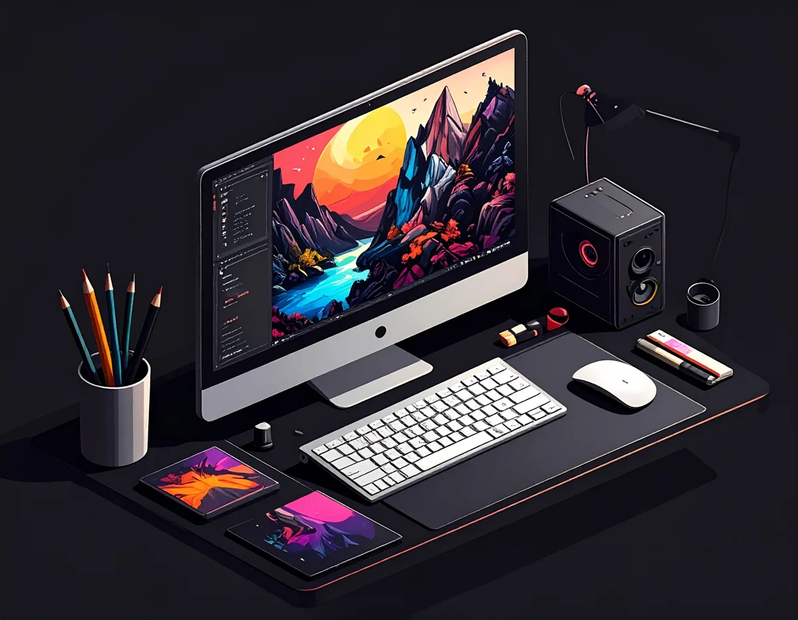
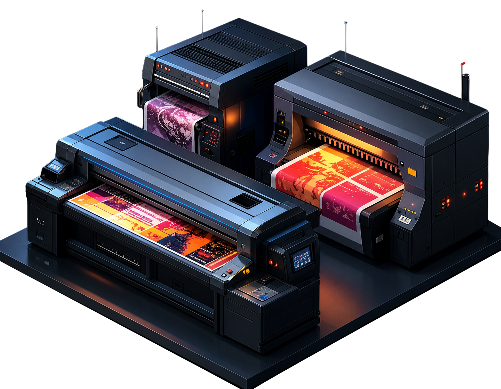
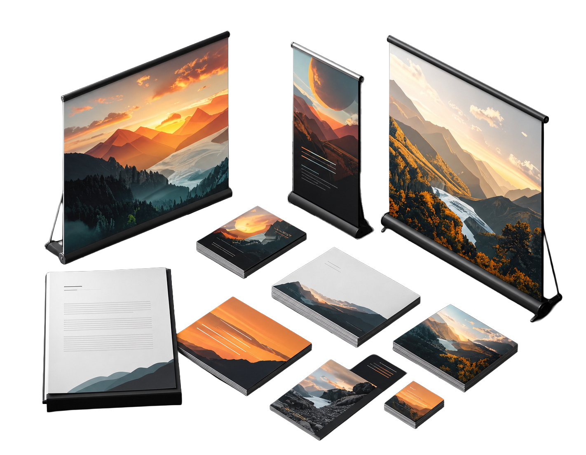
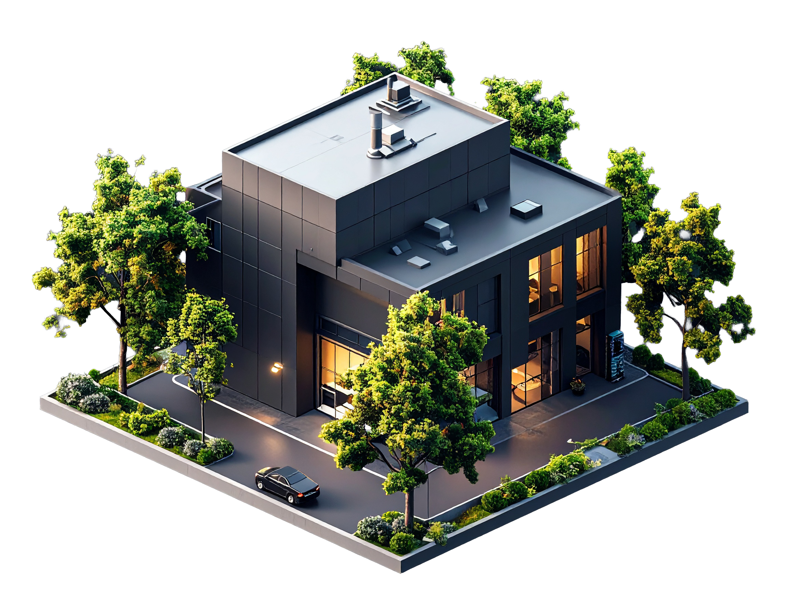
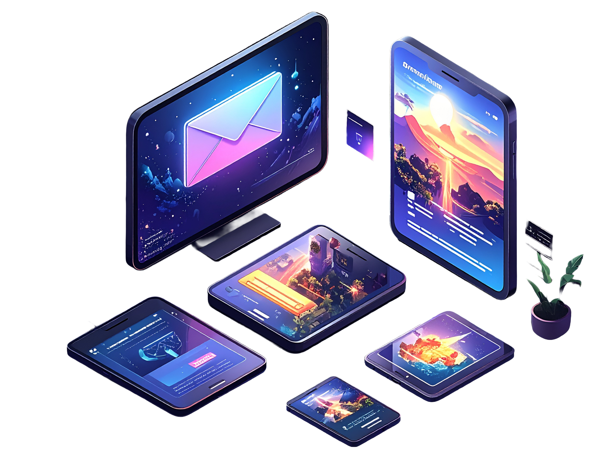

/ COMUNICAZIONE VISIVA · STAMPA · PRODUZIONE
Da più di 100 anni mettiamo la nostra storia al servizio delle tecnologie di oggi per dare forma ai progetti di domani.
PROGETTAZIONE
Brand identity, cataloghi, packaging, campagne pubblicitarie, editoria e strumenti di comunicazione coerenti e riconoscibili.

02 /PRODUZIONE
Stampa digitale e offset, grande formato e finiture speciali.

03 /PORTFOLIO
Una selezione dei nostri lavori più rappresentativi.

04 /AZIENDA
La nostra storia, i nostri valori, il nostro team.

05 /CONTATTI
Parliamo del tuo progetto, siamo qui per ascoltarti.

/ VISIONE
Dall’idea
alla materia.
Uniamo studio grafico e tipografia per realizzare identità, cataloghi, packaging e materiali di comunicazione efficaci e riconoscibili.
Seguiamo ogni progetto in tutte le sue fasi: analisi, concept, sviluppo creativo, prestampa, scelta dei materiali, stampa digitale o offset, grande formato e finitura. Un unico interlocutore, dalla prima idea al prodotto finito.
SCOPRI IL NOSTRO METODO/ PROCESSO
Un processo completo.
Dalla strategia alla produzione, ogni passaggio è coordinato per garantire coerenza, precisione e qualità.
Ogni progetto comincia dall’ascolto: mettiamo a fuoco esigenze, pubblico e obiettivi.
/ SELEZIONE
Progetti in evidenza.
Idee che prendono forma, dal progetto alla stampa.
/ ESPERIENZA
Dal 1923, costruiamo
il futuro della stampa.
Da oltre un secolo uniamo esperienza, innovazione e nuove tecnologie per trasformare le idee di oggi nei progetti di domani.
CONOSCI GRAFICHE ARRARA
Hai un progetto
da far crescere?
Raccontaci cosa vuoi realizzare.
Ti aiutiamo a trasformarlo
in un progetto visivo e produttivo completo.